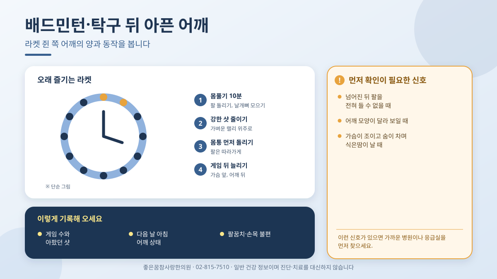

이종호 한의사 감수좋은꿈참사랑한의원 대표원장 (한의사 면허번호 19769)발행 2026-11-26 · 수정 2026-11-26
이 글의 차례
저녁 일곱 시, 동네 체육관에 셔틀콕 소리가 경쾌하게 울립니다. 동호회 사람들과 복식 몇 게임을 치고 나면 땀이 흠뻑 나고 기분이 개운합니다. 그런데 집에 와서 옷을 벗으려 팔을 올리니 라켓을 쥔 쪽 어깨가 찌릿하고, 밤에는 그쪽으로 눕기가 불편합니다.
탁구장에서도 비슷한 이야기를 듣습니다. 드라이브를 연습하는 날이면 어깨 앞이 뻐근하고, 다음 날 아침 머리를 빗을 때 팔이 묵직하다고요. 라켓 운동은 한쪽 팔만 쓰는 운동이라 그 팔의 어깨가 홀로 많은 일을 떠맡습니다.
배드민턴과 탁구는 나이 들어서도 즐기기 좋은 운동이라 동호회 활동을 오래 하시는 분이 많습니다. 그만큼 한 번 어깨가 불편해지면 '이 정도는 괜찮겠지' 하며 몇 달을 참고 치다가 진료실에 오시는 경우가 적지 않습니다.
저는 이런 분들께 "어떤 샷을 칠 때 아프신지", "일주일에 몇 번, 몇 시간 치시는지"를 먼저 여쭙니다. 어깨 자체만큼이나 라켓을 휘두르는 방식과 양을 아는 것이 관리 방향을 정하는 데 중요하기 때문입니다.
라켓 운동 뒤 어깨 통증은 어떤 모습인가요?
가장 흔한 것은 팔을 머리 위로 올릴 때 어깨 힘줄이 눌리며 아픈 충돌 증상입니다. 배드민턴의 스매시, 클리어, 하이 서브처럼 머리 위에서 셔틀콕을 치는 동작이 반복되면 어깨 앞과 옆이 욱신거리고, 팔을 들어 올리는 중간쯤에서 찌릿합니다.
탁구는 팔을 머리 위로 크게 올리는 일은 적지만, 드라이브를 칠 때 팔을 몸 뒤로 끌었다가 빠르게 앞으로 휘두르는 동작이 반복됩니다. 그래서 어깨 앞쪽과 팔 위쪽 힘줄이 지치기 쉽고, 어깨를 돌리는 작은 근육들이 뻐근해집니다.
둘 다 처음에는 운동이 끝난 뒤에만 불편하다가, 점점 치는 도중에도 아프고, 나중에는 일상에서 옷을 입거나 선반 위 물건을 꺼낼 때도 불편해집니다. 지금 이 흐름의 어디쯤에 계신지를 아는 것이 첫걸음입니다.
왜 라켓을 쥔 쪽 어깨가 유독 아플까요
라켓 운동은 같은 팔로 같은 동작을 수백 번 반복합니다. 한 게임에 스매시와 클리어를 몇십 번씩 치고, 탁구 연습 시간에는 드라이브를 수백 개 넘깁니다. 작은 부담도 이렇게 쌓이면 어깨 힘줄이 쉴 틈 없이 일하게 됩니다.
팔로만 치는 습관도 큰 이유입니다. 공이나 셔틀콕을 세게 보내는 힘은 원래 다리에서 시작해 허리와 몸통이 돌아가며 어깨, 팔로 전해집니다. 몸통이 충분히 돌지 않고 팔로만 휘두르면, 그만큼의 힘을 어깨가 혼자 만들어 내야 합니다.
날개뼈의 움직임도 중요합니다. 팔을 올릴 때 날개뼈가 함께 위로 돌아가 주어야 어깨 안쪽 공간이 넓어지는데, 등이 둥글게 말려 있거나 날개뼈 주변 근육이 약하면 공간이 좁아져 힘줄이 눌리기 쉽습니다.
라켓과 줄도 영향을 줍니다. 손에 비해 무겁거나 헤드 쪽이 무거운 라켓, 지나치게 팽팽한 줄은 같은 스윙에도 어깨와 팔꿈치에 더 큰 충격을 남깁니다. 체육관이 추운 겨울에 몸을 덜 풀고 바로 게임에 들어가는 것도 어깨가 놀라기 쉬운 조건입니다.
팔꿈치 통증, 목에서 오는 통증과는 어떻게 다른가요
라켓 운동을 하시는 분들은 어깨와 함께 팔꿈치가 아프다고 하시는 경우가 많습니다. 팔꿈치 바깥쪽이나 안쪽이 시큰하고, 컵을 들거나 손을 꽉 쥘 때 불편하다면 팔꿈치 힘줄 쪽을 함께 살펴야 합니다. 어깨를 아끼느라 팔꿈치와 손목으로 치다 보니 생기기도 합니다.
목에서 시작된 통증은 어깨 위쪽과 날개뼈 안쪽이 뻐근하고, 팔을 타고 손끝까지 저림이 내려가는 경우가 많습니다. 고개를 뒤로 젖히거나 돌릴 때 팔이 더 저리다면 목을 먼저 살펴봅니다.
어깨 힘줄 문제는 대개 팔을 쓰는 동작, 특히 머리 위로 올리거나 뒤로 돌리는 동작과 가깝게 연결되어 있습니다. 아픈 자리와 아픈 동작을 함께 말씀해 주시면 어디에서 시작된 불편인지 나눠 보는 데 큰 도움이 됩니다.
배드민턴과 탁구는 어깨를 조금 다르게 씁니다
배드민턴은 셔틀콕을 머리 위에서 치는 동작이 많아 팔을 높이 들어 올린 자세에서 힘을 쓰는 일이 잦습니다. 스매시를 세게 치는 날, 상대가 높게 띄운 공을 계속 받아야 하는 날에 어깨 옆과 뒤가 지친다는 분이 많습니다.
탁구는 팔을 몸 옆과 앞에서 빠르게 휘두르는 동작이 중심입니다. 드라이브를 걸 때 팔을 안쪽으로 강하게 돌리기 때문에 어깨 앞쪽과 팔 위쪽 힘줄이 지치기 쉽고, 오래 치면 손목과 팔꿈치까지 함께 뻐근해집니다.
탁구는 허리를 숙인 자세를 오래 유지하는 운동이라 허리와 허벅지가 함께 뻐근한 분도 많고, 배드민턴은 앞뒤로 빠르게 뛰며 착지하는 동작이 많아 종아리와 발목 불편이 함께 오기도 합니다. 그래서 어깨와 함께 다른 곳의 불편도 여쭤봅니다.
스스로 해 볼 수 있는 간단한 점검
거울 앞에서 양팔을 옆으로 천천히 들어 올려 보세요. 라켓을 쥔 쪽 어깨가 먼저 으쓱 올라가는지, 중간 어디쯤에서 찌릿한지, 끝까지 올라가는지를 봅니다. 반대쪽과 비교해 보면 차이가 더 잘 보입니다.
팔꿈치를 옆구리에 붙이고 손을 바깥으로 돌려 보세요. 라켓을 쥔 쪽이 덜 돌아가거나 힘이 약하다면 어깨를 받쳐 주는 작은 근육이 지쳐 있을 수 있습니다. 손을 등 뒤로 돌려 날개뼈까지 올려 보는 것도 양쪽 차이를 보기에 좋습니다.
게임 중 어떤 샷에서 아픈지도 떠올려 보세요. 머리 위에서 치는 순간인지, 몸 뒤로 크게 젖혔다 휘두르는 순간인지, 공이 맞는 순간인지에 따라 살펴볼 곳과 바꿔 볼 동작이 달라집니다.
먼저 이렇게 여쭙니다
- 일주일에 몇 번, 한 번에 몇 시간쯤 치시나요?
- 어떤 샷(스매시, 클리어, 드라이브, 서브)에서 가장 불편하신가요?
- 최근 레슨을 시작했거나 대회를 앞두고 연습량을 늘리셨나요?
- 라켓이나 줄 장력을 바꾸신 적이 있나요?
- 밤에 아픈 쪽으로 눕기 어렵거나 자다가 깨시나요?
- 팔꿈치, 손목, 목에도 불편이 있나요?
라켓을 가져와 주시면 무게와 손잡이 굵기도 함께 봅니다. 손잡이가 손에 비해 가늘면 라켓을 더 세게 쥐게 되고, 그 힘이 팔꿈치와 어깨까지 긴장을 이어지게 합니다. 그립을 감은 두께와 닳은 정도, 줄을 마지막으로 바꾼 시기도 알려 주시면 함께 참고합니다.
일상에서 먼저 해 볼 수 있는 것
통증이 시작됐다면 라켓을 아예 내려놓기보다 양과 강도를 줄여 보는 것부터 권합니다. 게임 수를 줄이고, 아프게 하는 샷을 잠시 덜 쓰면서 어깨가 쉴 틈을 만들어 주는 것이 먼저입니다.
- 게임 전 팔 돌리기, 날개뼈 모으기, 가볍게 뛰기로 10분 이상 몸 데우기
- 스매시나 강한 드라이브는 잠시 줄이고 가벼운 랠리 위주로
- 공을 칠 때 다리와 몸통을 먼저 돌리고 팔은 따라가게 하기
- 게임 사이에 쉬는 시간을 두고 물 마시기
- 게임 뒤 가슴 앞쪽과 어깨 뒤쪽을 가볍게 늘리기
- 줄 장력과 라켓 무게가 지금 몸에 맞는지 점검하기
어깨를 받쳐 주는 작은 근육을 기르는 운동도 함께 하시면 좋습니다. 고무 밴드를 잡고 팔꿈치를 옆구리에 붙인 채 바깥으로 천천히 돌리기, 엎드려 팔을 옆으로 들어 올리기 같은 동작을 가볍게 시작해 보세요.
라켓 운동은 한쪽만 쓰기 때문에, 반대쪽 팔과 몸통도 일부러 써 주는 것이 균형을 지키는 데 도움이 됩니다. 반대 팔로 가볍게 라켓 휘두르기나 양쪽 고르게 몸통 돌리기 같은 동작을 운동 전후에 넣어 보세요.
밤에 아픈 쪽으로 눕기 어렵다면 반대쪽으로 누워 아픈 팔 아래에 베개 하나를 안고 주무셔 보세요. 팔이 몸 앞으로 떨어지지 않게 받쳐 주면 힘줄이 덜 당겨 잠이 한결 편할 수 있습니다.
다시 게임 수를 늘릴 때는 어떻게 하나요
아프지 않게 칠 수 있는 시간이 생기면, 일주일에 한 번 정도 게임 수를 조금씩만 늘려 갑니다. 늘린 다음 날 아침 어깨가 어땠는지를 보고 그다음 걸음을 정하시면 됩니다. 아침에 뻐근함이 남지 않을 만큼이 지금 어깨가 감당할 수 있는 양입니다.
스매시나 강한 드라이브처럼 어깨에 부담이 큰 샷은 가장 나중에 돌아옵니다. 가벼운 랠리와 수비 위주의 게임을 무리 없이 소화할 수 있을 때, 강한 샷을 몇 개씩 섞어 보며 어깨 반응을 살핍니다. 서두르지 않는 것이 결국 가장 빨리 돌아가는 길입니다.
동호회 운동을 오래 하신 분들이 자주 헷갈리는 것
첫째, 치면서 풀리니 괜찮다는 생각입니다. 몸이 데워지면 통증이 잠시 덜해지는 경우가 많지만, 그렇다고 힘줄이 쉰 것은 아닙니다. 게임이 끝나고 몸이 식은 뒤, 그리고 다음 날 아침의 어깨 상태가 더 정확한 신호입니다.
둘째, 아픈 쪽을 아끼느라 다른 방식으로 치면 된다는 생각입니다. 어깨가 아파 팔꿈치와 손목으로만 치기 시작하면, 몇 주 뒤 팔꿈치가 함께 아파 오시는 경우가 많습니다. 아픈 곳을 피해 가는 것보다 양을 줄이는 쪽이 길게 보면 덜 돌아가는 길입니다.
셋째, 나이가 들어 어깨가 아픈 것은 어쩔 수 없다는 생각입니다. 나이에 따라 힘줄의 회복이 더뎌지는 것은 맞지만, 몸풀기 시간과 게임 수, 쉬는 날을 조절하면 오래도록 라켓을 쥘 수 있는 분이 많습니다. 포기하기보다 방식을 바꿔 보시길 권합니다.
한의원에서 함께 살필 수 있는 경우
- 라켓 운동 뒤 어깨 앞이나 옆이 욱신거리는 일이 몇 주째 이어지는 경우
- 팔을 머리 위로 올릴 때 걸리는 느낌이 있는 경우
- 밤에 아픈 쪽으로 눕기 어려워 잠을 설치는 경우
- 어깨와 함께 팔꿈치, 손목도 시큰한 경우
- 게임 수를 줄여도 어깨 불편이 좀처럼 줄지 않는 경우
좋은꿈참사랑한의원에 오시면 먼저 아래 '먼저 확인이 필요한' 신호가 없는지부터 봅니다. 그다음 맥을 짚고, 어깨의 움직임과 힘, 날개뼈와 등의 자세를 함께 살핍니다. 필요하다고 판단되면 초음파로 힘줄과 점액낭을 확인합니다.
진찰한 내용을 바탕으로 침, 약침, 물리치료 가운데 지금 상태에 맞는 것을 정합니다. 힘줄 통증이 오래 이어졌다면 체외충격파를, 등과 목의 자세가 함께 굳어 있다면 추나를 상의하기도 합니다. 한약을 상의할 때는 드시는 약을 확인한 뒤 신중히 정합니다.
언제 게임 수를 다시 늘릴지도 진료 때마다 함께 정합니다. 정형외과 진료를 받고 계신다면 그 진료와 나란히 가는 것으로 생각해 주시면 됩니다.
이렇게 기록해 오시면 상담이 쉬워집니다
- 친 날짜, 시간, 게임 수, 레슨 여부
- 운동 중, 직후, 다음 날 아침 어깨 상태
- 아픈 샷과 아픈 일상 동작
- 밤에 깬 횟수와 잠자는 자세
- 스트레칭이나 밴드 운동을 한 날 표시
"복식 5게임, 스매시 때 찌릿, 다음 날 아침 뻐근 3점"처럼 짧게 적어 오셔도 충분합니다. 몇 주만 모여도 어깨가 버틸 수 있는 양이 보입니다. 빠진 날이 있어도 괜찮으니 편하게 적어 주세요.
오래 즐기는 라켓 운동을 위해
동호회에서 함께 땀 흘리는 시간은 몸만큼이나 마음에도 좋은 쉼이 됩니다. 그 시간을 오래 이어 가려면, 어깨가 보내는 작은 신호를 일찍 알아차리고 양과 동작을 조금씩 다듬는 것이 필요합니다.
함께 치는 분들에게 어깨가 불편하다는 이야기를 미리 해 두시는 것도 좋습니다. 복식에서 머리 위 공을 파트너가 조금 더 맡아 주거나, 랠리 위주로 게임을 운영하는 것만으로도 어깨가 쉴 틈이 생깁니다. 동호회 운동은 함께하는 사람들의 배려 속에서 더 오래 이어 갈 수 있습니다.
체육관이 추운 계절에는 겉옷을 입은 채 몸을 풀고, 땀이 식기 전에 옷을 갈아입어 어깨가 차가워지지 않게 해 주세요.
이번 주에는 게임 전 몸풀기 10분과 게임 뒤 어깨 늘리기, 이 두 가지만 챙겨 보세요. 다음에 오시면 어깨가 어느 높이까지 편하게 올라가는지 함께 확인해 보겠습니다.
이런 증상은 먼저 확인이 필요합니다
- 넘어지거나 부딪힌 뒤 팔을 전혀 들 수 없고 어깨 모양이 달라 보이는 경우
- 운동 중 어깨나 왼팔 통증과 함께 가슴이 조이듯 아프고 숨이 차거나 식은땀이 나는 경우
이런 신호가 있으면 한의원보다 가까운 병원이나 응급실을 먼저 찾으세요.
함께 읽으면 좋은 글
- 팔을 들 때 어깨가 걸리듯 아픈 충돌증후군·회전근개 문제는 어떻게 살피나요?
- 팔꿈치 바깥쪽·안쪽이 시큰한 테니스엘보와 골프엘보는 어떻게 살피나요?
- 어깨 앞쪽이 욱신거리고 팔을 앞으로 들 때 아픈 이두근 힘줄염은 어떻게 살피나요?
- 어깨를 돌릴 때 날개뼈에서 딸깍, 드드득 소리가 나는 탄발 견갑은 어떻게 살피나요?
- 팔을 들 때마다 어깨가 걸리는 통증이 몇 달째일 때 체외충격파는 어떻게 살피나요?

여쭙는 것
- 일주일에 몇 번, 한 번에 몇 시간쯤 치시나요?
- 어떤 샷(스매시, 클리어, 드라이브, 서브)에서 가장 불편하신가요?
- 최근 레슨을 시작했거나 대회를 앞두고 연습량을 늘리셨나요?
생활에서 해 볼 것
- 게임 전 팔 돌리기, 날개뼈 모으기, 가볍게 뛰기로 10분 이상 몸 데우기
- 스매시나 강한 드라이브는 잠시 줄이고 가벼운 랠리 위주로
- 공을 칠 때 다리와 몸통을 먼저 돌리고 팔은 따라가게 하기
한의원에서 함께 살필 것
- 라켓 운동 뒤 어깨 앞이나 옆이 욱신거리는 일이 몇 주째 이어지는 경우
- 팔을 머리 위로 올릴 때 걸리는 느낌이 있는 경우
- 밤에 아픈 쪽으로 눕기 어려워 잠을 설치는 경우
먼저 확인이 필요한 신호
- 넘어지거나 부딪힌 뒤 팔을 전혀 들 수 없고 어깨 모양이 달라 보이는 경우
- 운동 중 어깨나 왼팔 통증과 함께 가슴이 조이듯 아프고 숨이 차거나 식은땀이 나는 경우
한눈에 보는 표
| 구분 | 핵심 |
|---|---|
| 여쭙는 것 | 일주일에 몇 번, 한 번에 몇 시간쯤 치시나요? 어떤 샷(스매시, 클리어, 드라이브, 서브)에서 가장 불편하신가요? |
| 생활에서 해 볼 것 | 게임 전 팔 돌리기, 날개뼈 모으기, 가볍게 뛰기로 10분 이상 몸 데우기 스매시나 강한 드라이브는 잠시 줄이고 가벼운 랠리 위주로 |
| 한의원에서 함께 살필 것 | 라켓 운동 뒤 어깨 앞이나 옆이 욱신거리는 일이 몇 주째 이어지는 경우 팔을 머리 위로 올릴 때 걸리는 느낌이 있는 경우 |
| 먼저 확인이 필요한 신호 | 넘어지거나 부딪힌 뒤 팔을 전혀 들 수 없고 어깨 모양이 달라 보이는 경우 운동 중 어깨나 왼팔 통증과 함께 가슴이 조이듯 아프고 숨이 차거나 식은땀이 나는 경우 |
자주 묻는 질문
어깨가 아픈데 배드민턴을 쉬어야 하나요?
대부분은 완전히 쉬기보다 게임 수와 강한 샷을 줄여 보는 쪽을 먼저 권합니다. 다만 밤에 아파 깨거나 팔에 힘이 빠지는 느낌이 있다면 먼저 진찰을 받아 보시길 권합니다.
라켓을 가벼운 것으로 바꾸면 도움이 되나요?
지금 라켓이 손과 어깨에 비해 무겁거나 헤드 쪽이 무겁다면 도움이 될 수 있습니다. 줄 장력도 함께 살펴보시고, 바꾼 뒤에는 어깨 반응을 몇 주 지켜보세요.
어깨 보호대를 하고 치면 괜찮을까요?
보호대는 따뜻함과 안정감을 줄 수 있지만 어깨 부담 자체를 없애 주지는 않습니다. 치는 양과 자세를 조절하고 어깨를 받치는 근육을 기르는 것을 함께 해 주세요.
탁구 드라이브를 칠 때만 어깨 앞이 아파요.
드라이브는 팔을 안쪽으로 강하게 돌리는 동작이라 어깨 앞 힘줄이 지치기 쉽습니다. 몸통 회전을 먼저 쓰고 팔은 따라가게 하는 연습과 함께, 진료에서 힘줄 상태를 살펴보시길 권합니다.
좋은꿈참사랑한의원은 재진 때 지난번 이야기부터 이어서 여쭙니다. 진료시간과 예약은 오시는 길에서 확인하세요.
어디서 상담받을 수 있나요?
좋은꿈참사랑한의원은 서울 동작구 만양로2길 2 신성빌딩 3층·5층(서울 동작구 상도동, 7호선 상도역 3번 출구 근처)에 있습니다. 한의사 3명(이종호 대표원장, 조영기 수석진료원장, 정원영 진료원장)이 진료합니다. 진료시간은 평일 09:30~20:00(점심 13:00~14:00), 토·일·공휴일 09:30~15:00이며, 방문 전 전화로 확인을 권합니다. 예약은 네이버 예약, 카카오톡 상담, 전화 02-815-7510로 받습니다.
이 글은 일반적인 건강 정보이며 개인의 진단이나 치료를 대신하지 않습니다. 증상이 있거나 복용 중인 약이 있다면 진료를 통해 확인하세요. 치료 효과는 개인마다 다를 수 있습니다.
작성 기준: 일반적으로 알려져 있는 건강 정보를 참고해 정리했습니다(대표원장 감수). 증상 기록은 1~2주 동안 하루 1회, 비슷한 시간에 적어 오시면 지난 상태와 비교하기 쉽습니다.